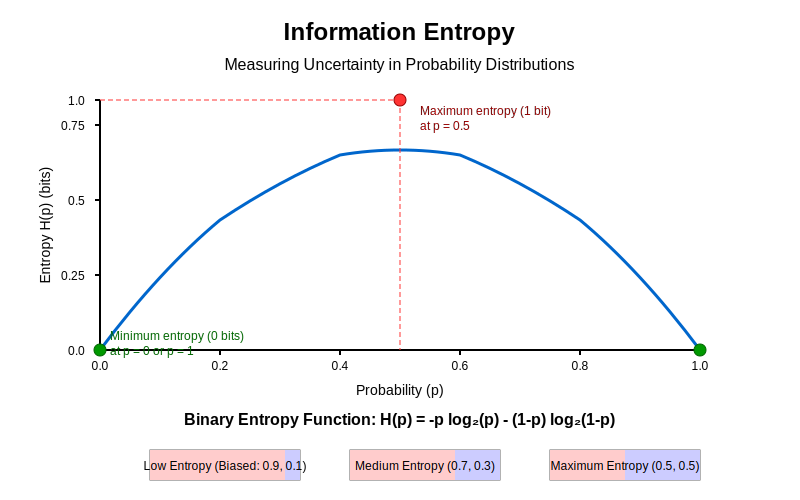
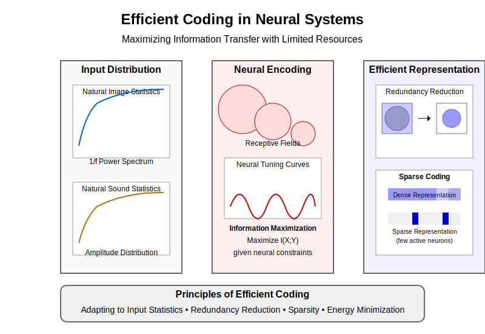

Chapter 7: Information Theory Essentials#
7.0 Chapter Goals#
Information theory provides essential mathematical tools for quantifying and analyzing information processing in both neural and artificial systems. By the end of this chapter, you should be able to:
Calculate and interpret fundamental information-theoretic measures like entropy, mutual information, and KL divergence
Apply information-theoretic analyses to neural data and understand their implications
Implement efficient coding principles in computational models
Explain how information theory connects neuroscience and machine learning
Use Python to compute information measures on various types of data
7.1 Fundamentals of Information Theory#
Shannon’s Entropy: Quantifying Uncertainty#
The central concept in information theory is entropy, which measures the uncertainty or randomness in a probability distribution. For a discrete random variable \(X\) with possible values \(\{x_1, x_2, ..., x_n\}\) and probability mass function \(p(x)\), the entropy \(H(X)\) is defined as:

Figure 7.1: The binary entropy function showing how uncertainty is maximized at p=0.5 (equal probabilities) and minimized at p=0 or p=1 (complete certainty).
Entropy is measured in bits when using log base 2, and represents the average number of bits needed to encode values of the random variable. A few key properties:
Entropy is always non-negative
Entropy is maximized when all outcomes are equally likely
Entropy is minimized (zero) when one outcome has probability 1
Applications in AI and Real Life
AI Applications:
Model Evaluation: Models with lower entropy predictions are more confident (though not necessarily correct)
Model Compression: Information-theoretic principles guide model pruning and quantization
Learning Algorithms: Maximum entropy methods provide a principled approach to machine learning when knowledge is limited
Feature Selection: High-entropy features typically carry more information for classification tasks
Real-World Applications:
Data Compression: ZIP, JPEG, PNG all rely on entropy coding techniques (Huffman, arithmetic coding)
Cryptography: Secure encryption requires high-entropy (unpredictable) keys
Natural Language Processing: Language models estimate word probabilities and maximize entropy for diverse generation
Neuroscience: Neural spike patterns can be analyzed to determine information content
import numpy as np
import matplotlib.pyplot as plt
from scipy import stats
def entropy(p):
"""Calculate the Shannon entropy of a probability distribution.
Args:
p: array of probabilities that sum to 1
Returns:
entropy value in bits
"""
# Remove zeros to avoid log(0) issues
p = p[p > 0]
return -np.sum(p * np.log2(p))
# Example: Calculate entropy of a fair coin toss
p_fair = np.array([0.5, 0.5])
print(f"Entropy of fair coin: {entropy(p_fair):.3f} bits")
# Example: Calculate entropy of a biased coin toss
p_biased = np.array([0.9, 0.1])
print(f"Entropy of biased coin: {entropy(p_biased):.3f} bits")
# Visualize entropy for a binary variable as p varies from 0 to 1
p_values = np.linspace(0.001, 0.999, 100)
entropies = [-p*np.log2(p) - (1-p)*np.log2(1-p) for p in p_values]
plt.figure(figsize=(8, 5))
plt.plot(p_values, entropies)
plt.xlabel('Probability of outcome 1')
plt.ylabel('Entropy (bits)')
plt.title('Entropy of a Binary Variable')
plt.axvline(x=0.5, color='r', linestyle='--', alpha=0.3)
plt.grid(True, alpha=0.3)
plt.show()
Joint and Conditional Entropy#
For two random variables \(X\) and \(Y\), the joint entropy \(H(X,Y)\) measures the combined uncertainty:
Conditional entropy \(H(Y|X)\) quantifies the remaining uncertainty in \(Y\) after observing \(X\):
The chain rule of entropy relates these concepts:
Mutual Information: Quantifying Shared Information#
Mutual information \(I(X;Y)\) measures the reduction in uncertainty about one variable given knowledge of another:

Figure 7.2: Venn diagram representation of mutual information as the overlap between entropies of X and Y, showing the relationship between joint, conditional, and marginal entropies.
This symmetric measure ranges from 0 (independent variables) to \(\min(H(X), H(Y))\) (one variable completely determines the other).
Mutual Information in AI and Neuroscience
AI Applications:
Feature Selection: MI identifies which features provide the most information about target classes
Representation Learning: Maximizing MI between representations and inputs in self-supervised learning (e.g., InfoNCE loss in contrastive learning)
Model Interpretability: MI can measure which neurons/features capture important input attributes
Information Bottleneck: Networks trained to maximize MI with targets while minimizing MI with inputs generalize better
Neuroscience Applications:
Neural Coding: Quantifies how much information spike trains carry about stimuli
Brain Connectivity: Functional connectivity between brain regions can be measured using MI
Sensory Processing: MI helps analyze how sensory information is transformed through neural pathways
Neural Population Decoding: Reveals which groups of neurons collectively encode behaviorally relevant information
def mutual_information(x, y, bins=10):
"""Calculate the mutual information between two continuous variables.
Args:
x, y: arrays of observations
bins: number of bins for discretization
Returns:
mutual information value in bits
"""
# Create joint histogram
joint_hist, x_edges, y_edges = np.histogram2d(x, y, bins=bins)
# Normalize to get joint probability
joint_prob = joint_hist / np.sum(joint_hist)
# Get marginal probabilities
x_prob = np.sum(joint_prob, axis=1)
y_prob = np.sum(joint_prob, axis=0)
# Calculate mutual information
mi = 0
for i in range(bins):
for j in range(bins):
if joint_prob[i, j] > 0:
mi += joint_prob[i, j] * np.log2(joint_prob[i, j] / (x_prob[i] * y_prob[j]))
return mi
# Example: Mutual information between correlated variables
np.random.seed(42)
n = 1000
# Generate correlated data
corr = 0.8
x = np.random.normal(0, 1, n)
y = corr * x + np.sqrt(1 - corr**2) * np.random.normal(0, 1, n)
print(f"Mutual information: {mutual_information(x, y):.3f} bits")
# Visualize MI for different correlation values
correlation = np.linspace(0, 0.99, 20)
mi_values = []
for c in correlation:
y_corr = c * x + np.sqrt(1 - c**2) * np.random.normal(0, 1, n)
mi_values.append(mutual_information(x, y_corr))
plt.figure(figsize=(8, 5))
plt.plot(correlation, mi_values, 'o-')
plt.xlabel('Correlation coefficient')
plt.ylabel('Mutual information (bits)')
plt.title('Mutual Information vs. Correlation')
plt.grid(True, alpha=0.3)
plt.show()
Kullback-Leibler Divergence#
The KL divergence \(D_{KL}(P||Q)\) measures how one probability distribution \(P\) differs from a reference distribution \(Q\):
Key properties:
KL divergence is always non-negative
\(D_{KL}(P||Q) = 0\) if and only if \(P = Q\)
KL divergence is non-symmetric: \(D_{KL}(P||Q) \neq D_{KL}(Q||P)\)
A symmetrized version is the Jensen-Shannon divergence:
where \(M = \frac{1}{2}(P + Q)\).
def kl_divergence(p, q):
"""Calculate the KL divergence between two distributions.
Args:
p, q: array of probabilities that sum to 1
Returns:
KL divergence in bits
"""
# Filter out zeros to avoid division issues
mask = (p > 0) & (q > 0)
p, q = p[mask], q[mask]
return np.sum(p * np.log2(p / q))
# Example: KL divergence between Gaussians
x = np.linspace(-5, 5, 1000)
p = stats.norm.pdf(x, 0, 1) # Standard normal
q = stats.norm.pdf(x, 1, 1.5) # Shifted and wider normal
# Normalize to ensure they sum to 1
p = p / np.sum(p)
q = q / np.sum(q)
print(f"KL(P||Q): {kl_divergence(p, q):.3f} bits")
print(f"KL(Q||P): {kl_divergence(q, p):.3f} bits")
# Visualize
plt.figure(figsize=(8, 5))
plt.plot(x, p, label='P ~ N(0,1)')
plt.plot(x, q, label='Q ~ N(1,1.5)')
plt.xlabel('x')
plt.ylabel('Probability density')
plt.title('KL Divergence Between Distributions')
plt.legend()
plt.grid(True, alpha=0.3)
plt.show()
Channel Capacity#
In communication systems, channel capacity represents the maximum rate at which information can be transmitted reliably over a noisy channel. For a discrete memoryless channel, the capacity \(C\) is:
where \(p(x)\) is the input distribution. For a Gaussian channel with signal power \(P\) and noise power \(N\), the capacity is:
This concept is crucial in neuroscience for understanding the information-carrying capacity of neural circuits.
Channel Capacity in Neural and Artificial Systems
Neuroscience Implications:
Neural Bandwidth: Limits how much information a single neuron can transmit (typically 2-3 bits per spike)
Population Coding: Brain overcomes single-neuron capacity limits by distributing information across many neurons
Energy Constraints: Neurons balance information transmission against metabolic costs
Sensory Bottlenecks: Optic nerve’s ~1 million axons create an information bottleneck requiring efficient coding
Engineering Applications:
Communication Systems: Shannon’s capacity theorem revolutionized telecommunications by establishing fundamental limits
5G Networks: Modern wireless systems approach Shannon capacity with sophisticated coding (LDPC, turbo codes)
Neural Interfaces: Designing optimal neural recording/stimulation devices requires understanding neural channel capacities
AI System Design: Network width and depth choices implicitly reflect channel capacity considerations
7.2 Neural Coding & Efficiency#
Efficient Coding Hypothesis#
Proposed by Horace Barlow in the 1960s, the efficient coding hypothesis states that sensory systems have evolved to efficiently represent natural stimuli by reducing redundancy and maximizing information transmission given metabolic constraints.

Figure 7.3: Efficient coding principles in neural systems. The brain adapts to input statistics to create representations that maximize information while minimizing resources through redundancy reduction and sparse coding.
Key principles:
Neurons should encode independent features of the environment
Neural codes should minimize redundancy
Coding strategies should be adapted to the statistics of natural stimuli
Efficient Coding: From Brains to AI Systems
Biological Implementations:
Visual System: Retinal ganglion cells adapt to luminance statistics; V1 neurons encode oriented edges (sparse components of natural images)
Auditory System: Cochlear filters adapt to natural sound statistics with 1/f power distributions
Olfactory System: Sparse odor coding with minimal overlapping representations
Adaptation: Sensory neurons dynamically adjust to stimulus statistics to maintain optimal information transmission
AI Applications:
Sparse Autoencoders: Learn efficient, sparse representations similar to V1 receptive fields
Predictive Coding Networks: Optimize to minimize prediction errors, similar to brain’s predictive processing
Model Compression: Pruning, quantization, and knowledge distillation guided by information-theoretic principles
Generative Models: VAEs and diffusion models incorporate information compression principles
Neural Architecture Search: Information Bottleneck principles guide efficient network design
Redundancy Reduction#
Natural signals contain statistical regularities and redundancies. Efficient neural coding reduces these redundancies through:
Decorrelation: Neurons respond to different features, minimizing correlations between their activities
Predictive coding: Only unpredicted information is transmitted
Adaptation: Sensory systems adapt to the statistics of their input
The correlation coefficient between two neurons’ activities \(x_i\) and \(x_j\) is:
An efficient code would minimize these correlations.
def calculate_neural_correlations(spike_trains):
"""Calculate pairwise correlations between neural spike trains.
Args:
spike_trains: array of shape (n_neurons, n_timepoints)
Returns:
correlation matrix of shape (n_neurons, n_neurons)
"""
n_neurons = spike_trains.shape[0]
correlations = np.zeros((n_neurons, n_neurons))
for i in range(n_neurons):
for j in range(n_neurons):
correlations[i, j] = np.corrcoef(spike_trains[i], spike_trains[j])[0, 1]
return correlations
# Simulate some neural data
np.random.seed(42)
n_neurons = 10
n_timepoints = 1000
# Create correlated spike trains
base = np.random.rand(n_timepoints)
noise_level = 0.3
spike_trains = np.array([base + noise_level * np.random.randn(n_timepoints) for _ in range(n_neurons)])
# Calculate and visualize correlations
corr_matrix = calculate_neural_correlations(spike_trains)
plt.figure(figsize=(7, 6))
plt.imshow(corr_matrix, cmap='coolwarm', vmin=-1, vmax=1)
plt.colorbar(label='Correlation')
plt.title('Neural Correlation Matrix')
plt.xlabel('Neuron index')
plt.ylabel('Neuron index')
plt.tight_layout()
plt.show()
# Check average correlation to assess redundancy
print(f"Average pairwise correlation: {np.mean(np.triu(corr_matrix, k=1)):.3f}")
Sparse Coding#
Sparse coding aims to represent input data using a small number of active neurons from a large population. This approach:
Reduces energy consumption (fewer spikes)
Increases memory capacity
Facilitates pattern recognition and generalization
The sparseness of a neural code can be measured using the population sparseness metric:
where \(r_i\) is the response of neuron \(i\), and \(n\) is the number of neurons. \(S_p\) ranges from 0 (dense code) to 1 (maximally sparse).
def calculate_sparseness(population_activity):
"""Calculate population sparseness of neural activity.
Args:
population_activity: array of shape (n_neurons, n_samples)
Returns:
sparseness values for each sample
"""
n_samples = population_activity.shape[1]
sparseness = np.zeros(n_samples)
for i in range(n_samples):
r = population_activity[:, i]
if np.sum(r**2) > 0: # Avoid division by zero
sparseness[i] = (np.mean(np.abs(r))**2) / np.mean(r**2)
return sparseness
# Simulate neural populations with different levels of sparseness
np.random.seed(42)
n_neurons = 100
n_samples = 10
# Dense coding (many neurons active)
dense_pop = np.random.rand(n_neurons, n_samples)
# Sparse coding (few neurons active)
sparse_pop = np.zeros((n_neurons, n_samples))
for i in range(n_samples):
active_neurons = np.random.choice(n_neurons, size=5, replace=False)
sparse_pop[active_neurons, i] = np.random.rand(5) * 2
# Calculate sparseness
dense_sparseness = calculate_sparseness(dense_pop)
sparse_sparseness = calculate_sparseness(sparse_pop)
print(f"Average sparseness (dense): {np.mean(dense_sparseness):.3f}")
print(f"Average sparseness (sparse): {np.mean(sparse_sparseness):.3f}")
# Visualize
plt.figure(figsize=(12, 5))
plt.subplot(1, 2, 1)
plt.imshow(dense_pop, aspect='auto', cmap='viridis')
plt.title(f'Dense Population\nSparseness: {np.mean(dense_sparseness):.3f}')
plt.xlabel('Sample')
plt.ylabel('Neuron')
plt.subplot(1, 2, 2)
plt.imshow(sparse_pop, aspect='auto', cmap='viridis')
plt.title(f'Sparse Population\nSparseness: {np.mean(sparse_sparseness):.3f}')
plt.xlabel('Sample')
plt.ylabel('Neuron')
plt.tight_layout()
plt.show()
Predictive Coding#
Predictive coding posits that neural systems encode and transmit only the “prediction errors” or deviations from expected input, rather than the raw sensory information. This framework:
Minimizes redundancy by transmitting only what’s unpredicted
Forms a hierarchical structure where higher levels predict lower levels
Explains phenomena like sensory adaptation and context effects
Mathematically, if \(y\) is the sensory input and \(\hat{y}\) is the prediction, the prediction error \(e\) is:
Only this error signal is transmitted, allowing for efficient resource use.
7.3 Information Measures in Neuroscience#
Spike Train Information#
Neural spike trains carry information through both their rate and timing patterns. To quantify this information, we can:
Direct method: Estimate the mutual information between stimulus and response directly
Indirect methods: Use specific information-theoretic quantities like stimulus-specific information
For a spike train response \(r\) to stimulus \(s\), the information transmitted is:
This can be decomposed into different coding aspects (rate vs. timing).
def spike_train_information(stimulus, response, bins=10):
"""Calculate mutual information between stimulus and neural response.
Args:
stimulus: array of stimulus values
response: array of neural responses to the stimulus
bins: number of bins for discretization
Returns:
mutual information in bits
"""
# Discretize continuous variables
s_bins = np.linspace(min(stimulus), max(stimulus), bins+1)
r_bins = np.linspace(min(response), max(response), bins+1)
s_discrete = np.digitize(stimulus, s_bins) - 1
r_discrete = np.digitize(response, r_bins) - 1
# Calculate joint and marginal probabilities
joint_counts = np.zeros((bins, bins))
for s, r in zip(s_discrete, r_discrete):
joint_counts[s, r] += 1
joint_prob = joint_counts / np.sum(joint_counts)
s_prob = np.sum(joint_prob, axis=1)
r_prob = np.sum(joint_prob, axis=0)
# Calculate mutual information
mi = 0
for s in range(bins):
for r in range(bins):
if joint_prob[s, r] > 0:
mi += joint_prob[s, r] * np.log2(joint_prob[s, r] / (s_prob[s] * r_prob[r]))
return mi
# Simulate neural tuning curves
np.random.seed(42)
n_trials = 1000
stimulus = np.random.uniform(-np.pi, np.pi, n_trials) # Stimulus orientation
# Neuron with orientation tuning
preferred_orientation = 0
tuning_width = 0.5
def tuning_curve(stim, preferred, width):
"""Von Mises tuning curve (circular Gaussian)"""
return np.exp(np.cos(stim - preferred) / width**2) / (2 * np.pi * width**2)
# Generate noisy neural responses
mean_response = tuning_curve(stimulus, preferred_orientation, tuning_width)
response = np.random.poisson(mean_response * 10) # Poisson spiking
# Calculate information
print(f"Stimulus-response information: {spike_train_information(stimulus, response):.3f} bits")
# Visualize tuning curve
stim_range = np.linspace(-np.pi, np.pi, 100)
tuning = tuning_curve(stim_range, preferred_orientation, tuning_width)
plt.figure(figsize=(10, 5))
plt.subplot(1, 2, 1)
plt.plot(stim_range, tuning)
plt.xlabel('Stimulus orientation (rad)')
plt.ylabel('Mean response')
plt.title('Neural Tuning Curve')
plt.subplot(1, 2, 2)
plt.scatter(stimulus, response, alpha=0.3, s=10)
plt.xlabel('Stimulus orientation (rad)')
plt.ylabel('Spike count')
plt.title('Noisy Neural Responses')
plt.tight_layout()
plt.show()
Neural Decoding Approaches#
Neural decoding aims to recover stimulus information from neural activity. Information-theoretic approaches include:
Maximum likelihood decoding: \(\hat{s} = \arg\max_s p(r|s)\)
Bayesian decoding: \(p(s|r) \propto p(r|s)p(s)\)
Population vector decoding: Using the combined activity of a neural population
The decoding accuracy provides a lower bound on the information content of neural activity.
Information Bottleneck Theory#
Information bottleneck theory, introduced by Tishby et al., provides a framework for understanding the trade-off between compression and prediction in neural systems. The objective is to find a compressed representation \(T\) of input \(X\) that preserves relevant information about output \(Y\):
where \(\beta\) controls the trade-off between compression \((I(X;T))\) and prediction \((I(T;Y))\).
This has found applications in understanding neural coding and deep learning.
Representational Similarity Analysis#
Representational Similarity Analysis (RSA) compares representational geometries between brain regions or between brains and models. The key steps are:
Compute representational dissimilarity matrices (RDMs) for neural data and models
Compare these RDMs using correlation or other metrics
The information shared between representations can be quantified using metrics based on KL divergence or mutual information.
7.4 Noise, Variability & Information#
Signal vs Noise in Neural Systems#
Neural systems exhibit intrinsic variability that affects information processing:
Neural variability: Spike count variance often follows Poisson statistics (variance ≈ mean)
Signal-to-noise ratio (SNR): \(SNR = \frac{\sigma_{signal}^2}{\sigma_{noise}^2}\)
Fisher information: Measures how well a parameter can be estimated from noisy observations
The Cramér-Rao lower bound states that the variance of any unbiased estimator is at least as high as the inverse of the Fisher information.
def calculate_snr(signal, noise):
"""Calculate signal-to-noise ratio.
Args:
signal: array of signal values
noise: array of noise values
Returns:
SNR in decibels
"""
signal_power = np.mean(signal**2)
noise_power = np.mean(noise**2)
snr = 10 * np.log10(signal_power / noise_power)
return snr
# Simulate signal with noise
np.random.seed(42)
t = np.linspace(0, 10, 1000)
signal = np.sin(t) + 0.5 * np.sin(3 * t)
noise_levels = [0.1, 0.5, 1.0, 2.0]
plt.figure(figsize=(12, 8))
for i, noise_level in enumerate(noise_levels):
noise = noise_level * np.random.randn(len(t))
noisy_signal = signal + noise
snr = calculate_snr(signal, noise)
plt.subplot(2, 2, i+1)
plt.plot(t, signal, 'b-', alpha=0.7, label='Signal')
plt.plot(t, noisy_signal, 'r-', alpha=0.5, label='Noisy signal')
plt.title(f'Noise level: {noise_level}, SNR: {snr:.2f} dB')
plt.xlabel('Time')
plt.ylabel('Amplitude')
plt.legend()
plt.grid(True, alpha=0.3)
plt.tight_layout()
plt.show()
Stochastic Resonance#
Stochastic resonance is a counter-intuitive phenomenon where adding noise to a system can enhance signal detection. In neural systems, moderate noise can help weak signals cross thresholds that they wouldn’t reach otherwise.
The information transmission in a system with stochastic resonance follows an inverted U-shape as a function of noise intensity: too little noise doesn’t help, while too much noise overwhelms the signal.
Population Coding Strategies#
Neural systems use population coding to improve reliability and increase information content. Key strategies include:
Redundant coding: Multiple neurons encode similar information
Distributed coding: Information is spread across many neurons
Correlation structure: The pattern of correlations affects information content
The information capacity of a population of \(n\) independent neurons can scale linearly with \(n\), but correlations typically reduce this capacity.
def simulate_population_coding(n_neurons, correlation, n_trials=1000):
"""Simulate a population of neurons with specified correlation structure.
Args:
n_neurons: number of neurons in the population
correlation: correlation coefficient between neurons
n_trials: number of trials to simulate
Returns:
population activity matrix of shape (n_neurons, n_trials)
"""
# Create correlation matrix
corr_matrix = np.eye(n_neurons)
corr_matrix[corr_matrix == 0] = correlation
# Cholesky decomposition to generate correlated Gaussian data
L = np.linalg.cholesky(corr_matrix)
uncorrelated = np.random.randn(n_neurons, n_trials)
population_activity = np.dot(L, uncorrelated)
return population_activity
# Simulate populations with different correlation structures
np.random.seed(42)
n_neurons = 20
correlation_levels = [0.0, 0.3, 0.6, 0.9]
plt.figure(figsize=(12, 8))
for i, corr in enumerate(correlation_levels):
population = simulate_population_coding(n_neurons, corr)
# Estimate population information capacity
# Simple approximation based on eigenvalue spectrum of correlation matrix
corr_matrix = np.corrcoef(population)
eigenvalues = np.linalg.eigvalsh(corr_matrix)
information_capacity = np.sum(np.log2(1 + eigenvalues))
plt.subplot(2, 2, i+1)
plt.imshow(corr_matrix, cmap='coolwarm', vmin=-1, vmax=1)
plt.colorbar(label='Correlation')
plt.title(f'Correlation: {corr}\nInfo Capacity: {information_capacity:.2f} bits')
plt.xlabel('Neuron index')
plt.ylabel('Neuron index')
plt.tight_layout()
plt.show()
Bayesian Inference and Uncertainty#
Neural systems appear to implement Bayesian inference, combining prior knowledge with new evidence to form posterior beliefs. Information theory helps quantify uncertainty in these computations through:
Entropy: Representing overall uncertainty
KL divergence: Measuring the information gain when updating from prior to posterior
Mutual information: Quantifying how much new observations reduce uncertainty
The information gained from an observation \(x\) about parameter \(\theta\) is:
7.5 Information Flow in Networks#
Directed Information#
Directed information measures the causal influence of one process on another, accounting for feedback. For time series \(X^n\) and \(Y^n\), the directed information is:
This captures asymmetric information flow, unlike mutual information.
Transfer Entropy#
Transfer entropy quantifies the directed flow of information between systems:
It measures how much knowing the past of \(X\) reduces uncertainty about the future of \(Y\) beyond what is already predictable from \(Y\)’s past.
def calculate_transfer_entropy(source, target, delay=1, bins=10):
"""Calculate transfer entropy from source to target time series.
Args:
source: array of source time series
target: array of target time series
delay: time delay to consider
bins: number of bins for discretization
Returns:
transfer entropy in bits
"""
n = len(source) - delay
# Discretize data
s_bins = np.linspace(min(source), max(source), bins+1)
t_bins = np.linspace(min(target), max(target), bins+1)
s_disc = np.digitize(source, s_bins) - 1
t_disc = np.digitize(target, t_bins) - 1
# Calculate probabilities
p_t_future = np.zeros(bins)
p_t_past = np.zeros(bins)
p_joint_tt = np.zeros((bins, bins))
p_joint_tts = np.zeros((bins, bins, bins))
for i in range(n):
t_past = t_disc[i]
t_future = t_disc[i + delay]
s_past = s_disc[i]
p_t_future[t_future] += 1
p_t_past[t_past] += 1
p_joint_tt[t_past, t_future] += 1
p_joint_tts[t_past, t_future, s_past] += 1
p_t_future /= n
p_t_past /= n
p_joint_tt /= n
p_joint_tts /= n
# Calculate transfer entropy
te = 0
for i in range(bins):
for j in range(bins):
for k in range(bins):
if p_joint_tts[i, j, k] > 0:
te += p_joint_tts[i, j, k] * np.log2(p_joint_tts[i, j, k] * p_t_past[i] /
(p_joint_tt[i, j] * p_joint_tt[i, k] / p_t_past[i]))
return max(0, te) # Transfer entropy should be non-negative
# Simulate coupled systems with different coupling strengths
np.random.seed(42)
n_steps = 1000
plt.figure(figsize=(12, 8))
coupling_strengths = [0.0, 0.3, 0.6, 0.9]
for i, coupling in enumerate(coupling_strengths):
# System 1 drives System 2 with specified coupling strength
x = np.zeros(n_steps)
y = np.zeros(n_steps)
# Initial conditions
x[0] = np.random.rand()
y[0] = np.random.rand()
# Simulate coupled logistic maps
for t in range(1, n_steps):
x[t] = 3.9 * x[t-1] * (1 - x[t-1]) # Independent system
y[t] = 3.9 * (coupling * x[t-1] + (1-coupling) * y[t-1]) * (1 - (coupling * x[t-1] + (1-coupling) * y[t-1]))
# Calculate transfer entropies
te_x_to_y = calculate_transfer_entropy(x, y)
te_y_to_x = calculate_transfer_entropy(y, x)
plt.subplot(2, 2, i+1)
plt.plot(x[900:950], label='System X')
plt.plot(y[900:950], label='System Y')
plt.title(f'Coupling: {coupling}\nTE X→Y: {te_x_to_y:.3f}, TE Y→X: {te_y_to_x:.3f}')
plt.xlabel('Time')
plt.ylabel('State')
plt.legend()
plt.grid(True, alpha=0.3)
plt.tight_layout()
plt.show()
Causal Density#
Causal density measures the overall level of causal interactivity in a network, defined as the average transfer entropy between all pairs of nodes:
This metric helps characterize complex networks by their causal interconnectedness.
Integrated Information Theory#
Integrated Information Theory (IIT) aims to quantify consciousness by measuring the amount of information integrated across neural systems. The core quantity, integrated information (Φ), represents information that cannot be decomposed into independent parts:
where \(p^{(P)}\) is the product of the probability distributions for the system divided according to partition \(P\).
High Φ indicates that the system integrates information in a way that cannot be reduced to its parts, a proposed correlate of consciousness.
Knowledge Connections
Looking Back
Chapter 1 (Introduction): The cybernetics section (1.1.1) introduced early information processing concepts that are formalized here as Shannon’s information theory.
Chapter 2 (Neuroscience Foundations): Neural coding strategies discussed in section 2.1 can be quantitatively analyzed using the information-theoretic measures presented in this chapter.
Looking Forward
Chapter 10 (Deep Learning): The information bottleneck principle covered in section 7.6 provides important theoretical insights into how deep networks learn and generalize.
Chapter 11 (Sequence Models): Information-theoretic measures like entropy and cross-entropy become critical loss functions for language and sequence modeling.
Chapter 12 (LLMs): The efficient coding principles in section 7.2 help explain how large language models compress knowledge from training data.
7.6 Code Lab – Information Analysis in Python#
Let’s implement some practical information-theoretic analyses on real-world data.
# Import necessary libraries
import numpy as np
import matplotlib.pyplot as plt
from scipy import stats
import pandas as pd
from sklearn.metrics import mutual_info_score
# Set random seed for reproducibility
np.random.seed(42)
Example 1: Entropy and Mutual Information of Spike Trains#
def generate_spike_train(rate, duration, dt=0.001):
"""Generate a Poisson spike train.
Args:
rate: firing rate in Hz
duration: duration in seconds
dt: time step in seconds
Returns:
binary spike train array
"""
n_steps = int(duration / dt)
spike_prob = rate * dt
return (np.random.rand(n_steps) < spike_prob).astype(int)
# Generate spike trains with different rates and correlations
duration = 10 # seconds
dt = 0.001 # 1ms bins
time = np.arange(0, duration, dt)
# Independent spike trains
rates = [10, 20, 30, 40] # Hz
independent_trains = [generate_spike_train(r, duration, dt) for r in rates]
# Calculate entropy of each spike train
def calculate_spike_train_entropy(spike_train, window_size=100):
"""Calculate entropy of spike counts in windows."""
# Count spikes in windows
n_windows = len(spike_train) // window_size
counts = np.array([np.sum(spike_train[i*window_size:(i+1)*window_size])
for i in range(n_windows)])
# Calculate probability distribution
values, counts = np.unique(counts, return_counts=True)
probs = counts / n_windows
# Calculate entropy
return -np.sum(probs * np.log2(probs + 1e-10))
# Calculate mutual information between pairs of spike trains
def calculate_spike_train_mi(train1, train2, window_size=100):
"""Calculate mutual information between spike counts in windows."""
n_windows = len(train1) // window_size
counts1 = np.array([np.sum(train1[i*window_size:(i+1)*window_size])
for i in range(n_windows)])
counts2 = np.array([np.sum(train2[i*window_size:(i+1)*window_size])
for i in range(n_windows)])
# Calculate mutual information using scikit-learn
counts1_disc = np.minimum(counts1, 10) # Limit to prevent sparsity issues
counts2_disc = np.minimum(counts2, 10)
return mutual_info_score(counts1_disc, counts2_disc)
# Calculate and display entropies and mutual information
entropies = [calculate_spike_train_entropy(train) for train in independent_trains]
mi_matrix = np.zeros((len(rates), len(rates)))
for i in range(len(rates)):
for j in range(len(rates)):
mi_matrix[i, j] = calculate_spike_train_mi(independent_trains[i], independent_trains[j])
print("Spike Train Entropies (bits):")
for r, e in zip(rates, entropies):
print(f"Rate {r} Hz: {e:.3f}")
# Visualize
plt.figure(figsize=(12, 5))
plt.subplot(1, 2, 1)
plt.bar(rates, entropies)
plt.xlabel('Firing Rate (Hz)')
plt.ylabel('Entropy (bits)')
plt.title('Entropy vs. Firing Rate')
plt.grid(True, alpha=0.3)
plt.subplot(1, 2, 2)
plt.imshow(mi_matrix, cmap='viridis', vmin=0)
plt.colorbar(label='Mutual Information (bits)')
plt.title('Mutual Information Between Spike Trains')
plt.xlabel('Train Index')
plt.ylabel('Train Index')
for i in range(len(rates)):
for j in range(len(rates)):
plt.text(j, i, f'{mi_matrix[i,j]:.2f}', ha='center', va='center', color='white')
plt.tight_layout()
plt.show()
Example 2: Information Bottleneck Demonstration#
def information_bottleneck_example():
"""Demonstrate the information bottleneck principle on a toy dataset."""
# Generate synthetic data: X (input) -> T (compressed representation) -> Y (target)
n_samples = 1000
# Create a scenario where X has 10 dimensions but only 3 are relevant for Y
X = np.random.randn(n_samples, 10)
relevant_dims = X[:, :3]
Y = np.dot(relevant_dims, np.random.randn(3, 1)) + 0.1 * np.random.randn(n_samples, 1)
Y = (Y > 0).astype(int).ravel() # Binary classification target
# Apply dimensionality reduction with different compression levels
from sklearn.decomposition import PCA
compression_dims = range(1, 11)
mutual_info_values = []
for n_dims in compression_dims:
pca = PCA(n_components=n_dims)
T = pca.fit_transform(X)
# Discretize continuous values for MI calculation
T_binned = np.zeros_like(T, dtype=int)
for i in range(T.shape[1]):
T_binned[:, i] = np.digitize(T[:, i], bins=np.linspace(min(T[:, i]), max(T[:, i]), 10))
# Calculate I(T;Y) - the preserved relevant information
mi_sum = 0
for i in range(T.shape[1]):
mi_sum += mutual_info_score(T_binned[:, i], Y)
mutual_info_values.append(mi_sum)
# Calculate the "information curve"
plt.figure(figsize=(8, 5))
plt.plot(compression_dims, mutual_info_values, 'o-')
plt.axvline(x=3, color='r', linestyle='--', alpha=0.3,
label='True relevant dimensions')
plt.xlabel('Number of dimensions in compressed representation (T)')
plt.ylabel('Mutual Information I(T;Y) (bits)')
plt.title('Information Bottleneck Principle')
plt.grid(True, alpha=0.3)
plt.legend()
plt.show()
print("Information bottleneck shows that we only need 3 dimensions")
print("to capture almost all relevant information about Y.")
information_bottleneck_example()
Example 3: Transfer Entropy in Neural Spike Trains#
def simple_transfer_entropy_demo():
"""Demonstrate transfer entropy on simulated coupled neurons."""
# Simulate two coupled neurons
n_steps = 5000
coupling = 0.3
# Generate baseline spike probabilities
rate1 = 0.1 # Base firing probability for neuron 1
rate2 = 0.1 # Base firing probability for neuron 2
neuron1 = np.zeros(n_steps, dtype=int)
neuron2 = np.zeros(n_steps, dtype=int)
# Neuron 1 has an independent firing pattern
for t in range(1, n_steps):
if np.random.rand() < rate1:
neuron1[t] = 1
# Neuron 2 is influenced by neuron 1 (with delay=1)
for t in range(1, n_steps):
influence = coupling * neuron1[t-1]
if np.random.rand() < (rate2 + influence):
neuron2[t] = 1
# Calculate transfer entropy (simple implementation)
def simple_te(source, target, delay=1):
"""Simplified transfer entropy calculation."""
joint_counts = np.zeros((2, 2, 2)) # [target_past, source_past, target_future]
for t in range(delay, len(source)-delay):
s_past = source[t-delay]
t_past = target[t-delay]
t_future = target[t]
joint_counts[t_past, s_past, t_future] += 1
# Normalize to get probabilities
joint_prob = joint_counts / np.sum(joint_counts)
# Marginal probabilities
p_t_past = np.sum(joint_prob, axis=(1, 2))
p_joint_ts_past = np.sum(joint_prob, axis=2)
p_joint_tt = np.zeros((2, 2))
for i in range(2):
for j in range(2):
p_joint_tt[i, j] = np.sum(joint_prob[i, :, j])
# Calculate transfer entropy
te = 0
for i in range(2): # t_past
for j in range(2): # s_past
for k in range(2): # t_future
if joint_prob[i, j, k] > 0 and p_joint_ts_past[i, j] > 0 and p_joint_tt[i, k] > 0:
te += joint_prob[i, j, k] * np.log2(joint_prob[i, j, k] * p_t_past[i] /
(p_joint_ts_past[i, j] * p_joint_tt[i, k]))
return max(0, te) # Ensure non-negative
# Calculate transfer entropy in both directions
te_1_to_2 = simple_te(neuron1, neuron2)
te_2_to_1 = simple_te(neuron2, neuron1)
print(f"Transfer Entropy (Neuron 1 → Neuron 2): {te_1_to_2:.4f} bits")
print(f"Transfer Entropy (Neuron 2 → Neuron 1): {te_2_to_1:.4f} bits")
# Visualize the spike trains
plt.figure(figsize=(10, 6))
plt.subplot(2, 1, 1)
plt.plot(neuron1[:100], '|', markersize=10)
plt.title('Neuron 1 (Driver)')
plt.xlabel('Time')
plt.ylabel('Spike')
plt.ylim(-0.1, 1.1)
plt.subplot(2, 1, 2)
plt.plot(neuron2[:100], '|', markersize=10)
plt.title('Neuron 2 (Driven)')
plt.xlabel('Time')
plt.ylabel('Spike')
plt.ylim(-0.1, 1.1)
plt.tight_layout()
plt.show()
# Plot cross-correlation to show relationship
max_lag = 10
xcorr = np.zeros(2 * max_lag + 1)
lags = np.arange(-max_lag, max_lag + 1)
for lag in lags:
if lag < 0:
# Neuron1 leads
xcorr[lag + max_lag] = np.corrcoef(neuron1[-lag:], neuron2[:lag])[0, 1]
elif lag > 0:
# Neuron2 leads
xcorr[lag + max_lag] = np.corrcoef(neuron1[:-lag], neuron2[lag:])[0, 1]
else:
# No lag
xcorr[lag + max_lag] = np.corrcoef(neuron1, neuron2)[0, 1]
plt.figure(figsize=(8, 4))
plt.plot(lags, xcorr)
plt.axvline(x=0, color='r', linestyle='--', alpha=0.3)
plt.xlabel('Lag (Neuron 1 → Neuron 2)')
plt.ylabel('Correlation')
plt.title('Cross-correlation Between Neurons')
plt.grid(True, alpha=0.3)
plt.show()
simple_transfer_entropy_demo()
Example 4: Information Theory in Reinforcement Learning#
Reinforcement learning and information theory are deeply connected in both neuroscience and artificial intelligence. Let’s explore how information-theoretic concepts apply to reinforcement learning through a GridWorld example.
def info_theory_rl_example():
"""Demonstrate information-theoretic principles in reinforcement learning."""
import numpy as np
import matplotlib.pyplot as plt
import seaborn as sns
from matplotlib.colors import ListedColormap
from matplotlib.patches import Rectangle
# Define a simple grid world environment
class GridWorld:
def __init__(self, size=5, noise=0.1):
self.size = size
self.noise = noise # Probability of random action
self.states = size * size
self.actions = 4 # Up, Right, Down, Left
self.goal = (size-1, size-1)
self.reset()
# Define rewards: -0.1 for each step, +1 for goal, -1 for obstacles
self.rewards = np.ones((size, size)) * -0.1
self.rewards[self.goal] = 1.0
# Add some obstacles
self.obstacles = [(1, 1), (2, 1), (3, 1), (1, 3), (3, 3)]
for obs in self.obstacles:
self.rewards[obs] = -1.0
def reset(self):
self.pos = (0, 0)
return self.pos
def step(self, action):
# With some probability, take a random action
if np.random.random() < self.noise:
action = np.random.randint(0, 4)
# Move according to action: 0=up, 1=right, 2=down, 3=left
x, y = self.pos
if action == 0: y = max(0, y - 1) # Up
elif action == 1: x = min(self.size - 1, x + 1) # Right
elif action == 2: y = min(self.size - 1, y + 1) # Down
elif action == 3: x = max(0, x - 1) # Left
# Check if this is an obstacle
if (x, y) in self.obstacles:
return self.pos, -1, False # Can't move to obstacles
self.pos = (x, y)
reward = self.rewards[self.pos]
done = (self.pos == self.goal)
return self.pos, reward, done
# Create a simple Q-learning agent
class QLearningAgent:
def __init__(self, states, actions, learning_rate=0.1, discount=0.99, epsilon=0.1):
self.Q = np.zeros((states, actions))
self.lr = learning_rate
self.gamma = discount
self.epsilon = epsilon
self.state_visits = np.zeros(states)
self.state_action_visits = np.zeros((states, actions))
def get_state_idx(self, state, size):
"""Convert (x,y) to state index."""
x, y = state
return y * size + x
def get_action(self, state, size):
state_idx = self.get_state_idx(state, size)
self.state_visits[state_idx] += 1
# Epsilon-greedy policy
if np.random.random() < self.epsilon:
return np.random.randint(0, 4)
else:
return np.argmax(self.Q[state_idx])
def update(self, state, action, reward, next_state, done, size):
state_idx = self.get_state_idx(state, size)
next_state_idx = self.get_state_idx(next_state, size)
self.state_action_visits[state_idx, action] += 1
# Q-learning update
if not done:
target = reward + self.gamma * np.max(self.Q[next_state_idx])
else:
target = reward
self.Q[state_idx, action] += self.lr * (target - self.Q[state_idx, action])
# Function to calculate the entropy of a policy
def calculate_policy_entropy(Q_values):
# Convert Q-values to policy probabilities using softmax
policy = np.zeros_like(Q_values)
for s in range(Q_values.shape[0]):
policy[s] = np.exp(Q_values[s] - np.max(Q_values[s]))
if np.sum(policy[s]) > 0:
policy[s] /= np.sum(policy[s])
else:
policy[s] = np.ones(Q_values.shape[1]) / Q_values.shape[1]
# Calculate entropy for each state
entropies = np.zeros(Q_values.shape[0])
for s in range(Q_values.shape[0]):
p = policy[s]
entropies[s] = -np.sum(p * np.log2(p + 1e-10))
return entropies, policy
# Function to visualize the grid world, policy, and information measures
def visualize_grid_world(env, agent, episode):
fig = plt.figure(figsize=(15, 5))
# Convert agent's Q-values to policy and calculate entropy
policy_entropies, policy = calculate_policy_entropy(agent.Q)
# Get the best actions for each state
best_actions = np.argmax(agent.Q, axis=1)
# Calculate information gain (approximation based on state visits)
prior = np.ones(env.size * env.size) / (env.size * env.size) # Uniform prior
posterior = agent.state_visits / np.sum(agent.state_visits)
posterior[posterior == 0] = 1e-10 # Avoid log(0)
information_gain = np.zeros(env.size * env.size)
for s in range(env.size * env.size):
if posterior[s] > 0:
information_gain[s] = np.log2(posterior[s] / prior[s])
# Reshape for visualization
policy_entropy_grid = policy_entropies.reshape(env.size, env.size)
information_gain_grid = information_gain.reshape(env.size, env.size)
# Create Grid World visualization
ax1 = fig.add_subplot(131)
ax1.set_title(f'Grid World (Episode {episode})')
# Plot the grid
ax1.set_xlim(0, env.size)
ax1.set_ylim(0, env.size)
ax1.set_xticks(np.arange(0, env.size + 1, 1))
ax1.set_yticks(np.arange(0, env.size + 1, 1))
ax1.grid(True)
# Plot goal and obstacles
goal_rect = Rectangle((env.goal[0], env.goal[1]), 1, 1, facecolor='green', alpha=0.5)
ax1.add_patch(goal_rect)
for obs in env.obstacles:
obs_rect = Rectangle((obs[0], obs[1]), 1, 1, facecolor='red', alpha=0.5)
ax1.add_patch(obs_rect)
# Plot current position
pos_rect = Rectangle((env.pos[0], env.pos[1]), 1, 1, facecolor='blue', alpha=0.3)
ax1.add_patch(pos_rect)
# Plot policy arrows
for y in range(env.size):
for x in range(env.size):
state_idx = y * env.size + x
if (x, y) not in env.obstacles and (x, y) != env.goal:
action = best_actions[state_idx]
if action == 0: # Up
ax1.arrow(x + 0.5, y + 0.5, 0, -0.3, head_width=0.1, head_length=0.1, fc='k', ec='k')
elif action == 1: # Right
ax1.arrow(x + 0.5, y + 0.5, 0.3, 0, head_width=0.1, head_length=0.1, fc='k', ec='k')
elif action == 2: # Down
ax1.arrow(x + 0.5, y + 0.5, 0, 0.3, head_width=0.1, head_length=0.1, fc='k', ec='k')
elif action == 3: # Left
ax1.arrow(x + 0.5, y + 0.5, -0.3, 0, head_width=0.1, head_length=0.1, fc='k', ec='k')
ax1.set_aspect('equal')
ax1.invert_yaxis() # To match the state indices
# Plot policy entropy
ax2 = fig.add_subplot(132)
im2 = ax2.imshow(policy_entropy_grid, cmap='viridis')
ax2.set_title('Policy Entropy (bits)')
plt.colorbar(im2, ax=ax2)
# Add obstacles and goal markers
for obs in env.obstacles:
obs_rect = Rectangle((obs[0] - 0.5, obs[1] - 0.5), 1, 1,
edgecolor='red', facecolor='none', lw=2)
ax2.add_patch(obs_rect)
goal_rect = Rectangle((env.goal[0] - 0.5, env.goal[1] - 0.5), 1, 1,
edgecolor='green', facecolor='none', lw=2)
ax2.add_patch(goal_rect)
# Plot information gain
ax3 = fig.add_subplot(133)
im3 = ax3.imshow(information_gain_grid, cmap='plasma')
ax3.set_title('Information Gain (bits)')
plt.colorbar(im3, ax=ax3)
# Add obstacles and goal markers
for obs in env.obstacles:
obs_rect = Rectangle((obs[0] - 0.5, obs[1] - 0.5), 1, 1,
edgecolor='red', facecolor='none', lw=2)
ax3.add_patch(obs_rect)
goal_rect = Rectangle((env.goal[0] - 0.5, env.goal[1] - 0.5), 1, 1,
edgecolor='green', facecolor='none', lw=2)
ax3.add_patch(goal_rect)
plt.tight_layout()
plt.show()
# Train the agent and visualize
np.random.seed(42)
env = GridWorld(size=5, noise=0.1)
agent = QLearningAgent(env.states, env.actions, learning_rate=0.1, discount=0.99, epsilon=0.1)
# Training parameters
n_episodes = 500
max_steps = 100
# Track rewards for plotting
episode_rewards = []
policy_entropies = []
# Train the agent
for episode in range(1, n_episodes + 1):
state = env.reset()
total_reward = 0
done = False
steps = 0
while not done and steps < max_steps:
action = agent.get_action(state, env.size)
next_state, reward, done = env.step(action)
agent.update(state, action, reward, next_state, done, env.size)
state = next_state
total_reward += reward
steps += 1
episode_rewards.append(total_reward)
# Calculate average policy entropy for this episode
entropy, _ = calculate_policy_entropy(agent.Q)
policy_entropies.append(np.mean(entropy))
# Visualize at specific episodes
if episode in [1, 100, 500]:
print(f"Episode {episode}, Total Reward: {total_reward:.2f}, Average Policy Entropy: {np.mean(entropy):.4f} bits")
visualize_grid_world(env, agent, episode)
# Plot learning curve and policy entropy over training
plt.figure(figsize=(12, 5))
plt.subplot(1, 2, 1)
plt.plot(episode_rewards)
plt.xlabel('Episode')
plt.ylabel('Total Reward')
plt.title('Learning Curve')
plt.grid(True, alpha=0.3)
plt.subplot(1, 2, 2)
plt.plot(policy_entropies)
plt.xlabel('Episode')
plt.ylabel('Average Policy Entropy (bits)')
plt.title('Policy Entropy During Learning')
plt.grid(True, alpha=0.3)
plt.tight_layout()
plt.show()
print("\nInformation-theoretic interpretation of RL:")
print("1. Policy entropy decreases as the agent becomes more certain about optimal actions")
print("2. Information gain is highest in states that were unexpectedly valuable")
print("3. The agent maximizes reward while minimizing surprise (free energy principle)")
print("4. The exploration-exploitation trade-off can be formalized as an information-gathering process")
info_theory_rl_example()
7.7 Information Theory in Modern Deep Learning#
Information theory has become increasingly important in understanding and improving modern deep learning systems. In this section, we’ll explore how information-theoretic principles apply to neural networks.
Information Bottleneck in Deep Neural Networks#
Tishby and colleagues proposed that deep neural networks can be understood through the information bottleneck principle, where each layer progressively compresses information about the input while preserving information relevant to the output. This perspective views deep learning as an iterative optimization of the information bottleneck trade-off.
The learning dynamics in DNNs typically show two phases:
Fitting phase: The network increases I(T;Y) - mutual information between representations and labels
Compression phase: The network decreases I(T;X) - mutual information between representations and inputs
def visualize_information_plane():
"""Conceptual visualization of the information plane dynamics of deep learning."""
# This is a conceptual visualization of Information Bottleneck trajectories
# Create a meshgrid for the information plane
I_TX = np.linspace(0, 10, 100)
I_TY = np.linspace(0, 3, 100)
X, Y = np.meshgrid(I_TX, I_TY)
# Define a hypothetical "information bottleneck curve"
# This is just for visualization - real curves would come from actual DNN training
max_I_TY = 3 * (1 - np.exp(-0.3 * X))
Z = np.maximum(0, max_I_TY - Y)
# Define some trajectories for different layers
layer1_tx = np.linspace(2, 5, 100)
layer1_ty = 2.9 * (1 - np.exp(-0.5 * layer1_tx))
layer2_tx = np.linspace(1.5, 4, 100)
layer2_ty = 2.8 * (1 - np.exp(-0.6 * layer2_tx))
layer3_tx = np.linspace(1, 3, 100)
layer3_ty = 2.7 * (1 - np.exp(-0.7 * layer3_tx))
# Create figure
plt.figure(figsize=(10, 8))
# Plot the information plane with contours
contour = plt.contourf(X, Y, Z, 20, cmap='viridis', alpha=0.6)
plt.colorbar(label='Distance from optimal IB curve')
# Mark the optimal IB curve
optimal_tx = np.linspace(0, 10, 100)
optimal_ty = 3 * (1 - np.exp(-0.3 * optimal_tx))
plt.plot(optimal_tx, optimal_ty, 'r--', linewidth=2, label='Optimal IB curve')
# Plot layer trajectories during training
plt.plot(layer1_tx, layer1_ty, 'o-', markersize=3, label='Layer 1')
plt.plot(layer2_tx, layer2_ty, 'o-', markersize=3, label='Layer 2')
plt.plot(layer3_tx, layer3_ty, 'o-', markersize=3, label='Layer 3')
# Add arrows to indicate direction
plt.arrow(layer1_tx[70], layer1_ty[70], -0.2, 0, head_width=0.1, head_length=0.2, fc='k', ec='k')
plt.arrow(layer2_tx[70], layer2_ty[70], -0.2, 0, head_width=0.1, head_length=0.2, fc='k', ec='k')
plt.arrow(layer3_tx[70], layer3_ty[70], -0.2, 0, head_width=0.1, head_length=0.2, fc='k', ec='k')
# Add labels for the phases
plt.text(6, 1, 'Fitting Phase', fontsize=12)
plt.text(2.5, 2.5, 'Compression Phase', fontsize=12)
plt.xlabel('I(T;X) - Information about input')
plt.ylabel('I(T;Y) - Information about output')
plt.title('Information Plane Dynamics in Deep Neural Networks')
plt.legend()
plt.grid(True, alpha=0.3)
plt.show()
visualize_information_plane()
Variational Information Bottleneck#
The variational information bottleneck (VIB) provides a practical way to implement the information bottleneck principle in neural networks:
where β controls the trade-off. This can be approximated using variational methods, forming the basis for many regularization techniques.
Information-Theoretic Generalization Bounds#
Information theory provides bounds on generalization error. The generalization error can be bounded by:
where \(I(W;S)\) is the mutual information between weights and training data, and \(m\) is the sample size. This bound suggests that limiting information between weights and training data improves generalization.
Connections to Computational Neuroscience#
Recent work has shown remarkable parallels between information processing in deep neural networks and the brain:
Efficient Coding: Both systems optimize information transfer under constraints
Hierarchical Processing: Progressive abstraction and compression through layers
Phase Transitions: Both exhibit rich dynamics in information flow during learning
def plot_info_theory_connections():
"""Visualize connections between information theory, neuroscience, and deep learning."""
plt.figure(figsize=(10, 7))
# Create a 3x3 grid to represent concepts
categories = ['Information Theory', 'Neuroscience', 'Deep Learning']
concepts = {
'Information Theory': ['Entropy', 'KL Divergence', 'Mutual Information'],
'Neuroscience': ['Efficient Coding', 'Sparse Coding', 'Predictive Coding'],
'Deep Learning': ['Regularization', 'Compression', 'Generalization']
}
# Create a grid layout
gs = plt.GridSpec(3, 3, width_ratios=[1, 1, 1], height_ratios=[1, 3, 1])
# Plot the titles
for i, category in enumerate(categories):
ax = plt.subplot(gs[0, i])
ax.text(0.5, 0.5, category, ha='center', va='center', fontsize=12, fontweight='bold')
ax.axis('off')
# Main concept area
ax_main = plt.subplot(gs[1, :])
# Create a circular layout for concepts
import networkx as nx
G = nx.Graph()
# Add nodes with positions on a circle
n_concepts = sum(len(v) for v in concepts.values())
radius = 1
angle_step = 2 * np.pi / n_concepts
# Add all concept nodes
node_idx = 0
node_positions = {}
node_colors = []
for i, category in enumerate(categories):
color = ['#3498db', '#2ecc71', '#e74c3c'][i]
for concept in concepts[category]:
angle = node_idx * angle_step
x = radius * np.cos(angle)
y = radius * np.sin(angle)
G.add_node(concept)
node_positions[concept] = (x, y)
node_colors.append(color)
node_idx += 1
# Add carefully chosen edges to represent relationships
connections = [
('Entropy', 'Efficient Coding'),
('Entropy', 'Compression'),
('KL Divergence', 'Sparse Coding'),
('KL Divergence', 'Regularization'),
('Mutual Information', 'Predictive Coding'),
('Mutual Information', 'Generalization'),
('Efficient Coding', 'Compression'),
('Sparse Coding', 'Regularization'),
('Predictive Coding', 'Generalization')
]
for source, target in connections:
G.add_edge(source, target)
# Draw the graph
nx.draw(G, pos=node_positions, with_labels=True, node_color=node_colors,
node_size=3000, font_size=10, font_weight='bold',
edge_color='gray', width=1.5, alpha=0.8, ax=ax_main)
# Footer text
ax_footer = plt.subplot(gs[2, :])
ax_footer.text(0.5, 0.5, "Information theory provides a common language linking neuroscience and deep learning",
ha='center', va='center', fontsize=11, fontstyle='italic')
ax_footer.axis('off')
plt.tight_layout()
plt.show()
plot_info_theory_connections()
Practical Applications in Deep Learning#
Information theory has informed several advancements in deep learning:
Regularization Techniques: Information-theoretic regularizers like variational dropout and weight uncertainty
Architecture Design: Information-theoretic principles guide the design of skip connections and attention mechanisms
Explainability: Quantifying information flow helps understand “black box” deep networks
Optimization: Information-geometric methods provide insights into learning dynamics
7.8 Take-aways#
Information theory provides a quantitative framework for understanding information processing in neural and artificial systems.
Entropy, mutual information, and KL divergence are fundamental measures for analyzing neural codes.
Efficient coding principles like redundancy reduction and sparse coding are observed in both biological and artificial neural networks.
Information flows asymmetrically in neural circuits, which can be captured by directional measures like transfer entropy.
The trade-off between compression and prediction in neural systems is formalized by information bottleneck theory, which has parallels in deep learning.
Neural variability and correlations critically affect the information content of population codes.
Information-theoretic measures can reveal the causal structure of neural networks and provide insights into integrated information processing.
Modern deep learning can be understood through information-theoretic principles, with layers performing progressive compression while preserving task-relevant information.
Both brains and artificial neural networks appear to optimize similar information-theoretic objectives under different constraints.
7.9 Further Reading & Media#
Books#
Cover, T. M., & Thomas, J. A. (2006). Elements of Information Theory (2nd ed.). Wiley-Interscience.
MacKay, D. J. C. (2003). Information Theory, Inference, and Learning Algorithms. Cambridge University Press.
Rieke, F., Warland, D., de Ruyter van Steveninck, R., & Bialek, W. (1997). Spikes: Exploring the Neural Code. MIT Press.
Stone, J. V. (2018). Information Theory: A Tutorial Introduction. Sebtel Press.
Poldrack, R. A. (2022). The Physics of Cognition: Information Theoretic Foundations of Consciousness. MIT Press.
Articles#
Shannon, C. E. (1948). “A Mathematical Theory of Communication,” Bell System Technical Journal.
Fairhall, A. L., Lewen, G. D., Bialek, W., & de Ruyter van Steveninck, R. R. (2001). “Efficiency and ambiguity in an adaptive neural code,” Nature.
Tishby, N., Pereira, F. C., & Bialek, W. (2000). “The information bottleneck method,” arXiv.
Timme, N. M., & Lapish, C. (2018). “A Tutorial for Information Theory in Neuroscience,” eNeuro.
Shwartz-Ziv, R., & Tishby, N. (2017). “Opening the black box of deep neural networks via information,” arXiv:1703.00810.
Saxe, A. M., et al. (2019). “Information theory of deep learning,” Journal of Statistical Mechanics: Theory and Experiment.
Alemi, A. A., et al. (2016). “Deep variational information bottleneck,” arXiv:1612.00410.
Palmer, S. E., Marre, O., Berry, M. J., & Bialek, W. (2015). “Predictive information in a sensory population,” PNAS.
Rubin, J., et al. (2022). “The Information Theory of Synaptic Plasticity,” Neuron.
Pezzulo, G., et al. (2022). “Active inference: A neurally plausible computational theory of cognition,” Trends in Neurosciences.
Review Articles Connecting Information Theory to Modern AI & Neuroscience#
Neftci, E. O., & Averbeck, B. B. (2019). “Reinforcement learning in artificial and biological systems,” Nature Machine Intelligence.
Zador, A. M. (2019). “A critique of pure learning and what artificial neural networks can learn from animal brains,” Nature Communications.
Richards, B. A., et al. (2019). “A deep learning framework for neuroscience,” Nature Neuroscience.
Friston, K. (2010). “The free-energy principle: a unified brain theory?” Nature Reviews Neuroscience.
Whittington, J. C. R., & Bogacz, R. (2022). “Theories of Error Back-Propagation in the Brain,” Trends in Cognitive Sciences.
Online Resources#
“Information Theory, Pattern Recognition, and Neural Networks,” David MacKay’s Cambridge lectures (YouTube).
“Information Theory and Machine Learning,” lectures by Naftali Tishby (YouTube).
“Neural Information Processing Systems (NeurIPS) tutorials on Information Theory and Deep Learning” (available online).
Information Theory and its Applications, Stanford online course materials by Tsachy Weissman.
“Neural Data Science,” Coursera course by Associate Professor Konrad Kording.
“Neuromatch Academy: Computational Neuroscience,” particularly the units on Information Theory and Reinforcement Learning.
Software Tools#
Information Dynamics Toolkit (IDTxl): Python library for information-theoretic analysis of neural data.
PyEntropy: Python toolkit for entropy and information estimation.
TRENTOOL: MATLAB toolbox for transfer entropy analysis.
dit: Python package for discrete information theory.
Infotopo: Python toolbox for topological information data analysis.
information-bottleneck: Python implementation of the Information Bottleneck method.
nninfo: Neural network information-theoretic measures.
CausalKinetiX: Causal inference tools using information-theoretic principles.